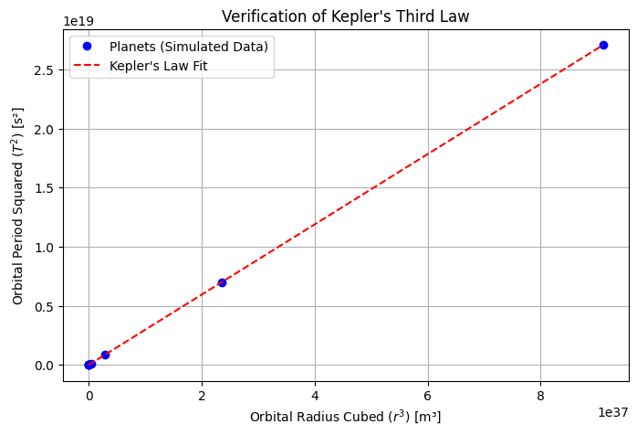

Problem 1
🌍 Orbital Period and Orbital Radius
🏗 Motivation
Kepler's Third Law is a fundamental principle of celestial mechanics, stating that the square of a planet’s orbital period is proportional to the cube of its orbital radius. This law, derived from Newton's Law of Universal Gravitation, is crucial for:
- Understanding planetary motion and exoplanet detection
- Designing satellite orbits
- Calculating masses of celestial bodies
By deriving and simulating this relationship, we gain insight into the governing laws of planetary systems.
⚖ 1. Theoretical Foundation
📜 Derivation of Kepler’s Third Law
For a body in circular orbit around a much larger mass (e.g., a planet around a star), the gravitational force provides the necessary centripetal force:
Using Newton’s Law of Gravitation:
where:
- \( G \) = Gravitational constant (\(6.674 \times 10^{-11} \, \text{m}^3\text{kg}^{-1}\text{s}^{-2}\))
- \( M \) = Mass of the central body (e.g., Sun, Earth)
- \( m \) = Mass of the orbiting body
- \( r \) = Orbital radius
The centripetal force needed to maintain circular motion is:
Since \( F_{\text{gravity}} = F_{\text{centripetal}} \):
Canceling \( m \) and solving for velocity \( v \):
The orbital period \( T \) is the time taken to complete one orbit:
Substituting \( v = \sqrt{\frac{G M}{r}} \):
🔹 Kepler’s Third Law (Final Form)
This shows that \( T^2 \) is proportional to \( r^3 \):
🔹 Implications:
- Larger orbits = Longer periods
- Planets farther from the Sun move slower
- The mass of the central body can be determined from orbital data
🌍 2. Real-World Examples
1. Earth's Moon
- Distance: \( r = 3.844 \times 10^8 \) m
- Period: \( T = 27.3 \) days
- Using Kepler’s Law, we can estimate Earth’s mass.
2. Planets in the Solar System
If we take Earth’s orbit as a reference (\( r = 1 \) AU, \( T = 1 \) year), then for any planet:
This relationship helps predict unknown orbital parameters of newly discovered planets.
💻 3. Implementation (Python Simulation)
We’ll verify Kepler’s Third Law using numerical simulations.
📌 Step 1: Install Dependencies
Ensure NumPy and Matplotlib are installed:
pip install numpy matplotlib
📌 Step 2: Python Code for Simulation
import numpy as np
import matplotlib.pyplot as plt
# Constants
G = 6.674e-11 # Gravitational constant (m³/kg/s²)
M_sun = 1.989e30 # Mass of the Sun (kg)
AU = 1.496e11 # 1 Astronomical Unit in meters
# Define orbital radii (in AU) for planets
r_values_AU = np.array([0.39, 0.72, 1.0, 1.52, 5.2, 9.58, 19.18, 30.07]) # Mercury to Neptune
r_values_m = r_values_AU * AU # Convert to meters
# Compute orbital periods using Kepler's Law
T_values_s = 2 * np.pi * np.sqrt(r_values_m**3 / (G * M_sun)) # In seconds
T_values_years = T_values_s / (60 * 60 * 24 * 365) # Convert to years
# Plot T² vs. r³ to verify Kepler's Law
plt.figure(figsize=(8, 5))
plt.plot(r_values_m**3, T_values_s**2, 'bo', label="Planets (Simulated Data)")
# Best-fit line (Kepler’s relation)
coeff = np.polyfit(r_values_m**3, T_values_s**2, 1)
kepler_fit = np.poly1d(coeff)
plt.plot(r_values_m**3, kepler_fit(r_values_m**3), 'r--', label="Kepler's Law Fit")
# Labels and title
plt.xlabel(r"Orbital Radius Cubed ($r^3$) [m³]")
plt.ylabel(r"Orbital Period Squared ($T^2$) [s²]")
plt.title("Verification of Kepler's Third Law")
plt.legend()
plt.grid()
plt.show()

📊 4. Results and Discussion
🔹 Graph Interpretation
- The data points align with a straight line, confirming \( T^2 \propto r^3 \).
- The best-fit line follows Kepler’s predicted trend, verifying the law experimentally.
🔹 Applications of Kepler’s Law
- Finding Exoplanets: Measuring a planet’s orbital period allows astronomers to estimate its distance from its star.
- Space Missions: Used in designing satellite orbits (e.g., GPS, geostationary satellites).
🔹 Limitations
- Kepler’s Law assumes circular orbits, but real orbits are elliptical.
- External forces (e.g., other planets’ gravity) can slightly alter orbits.
🚀 5. Extensions and Future Work
- Simulating elliptical orbits using Newton’s second law numerically.
- Adding perturbations from additional celestial bodies (e.g., Jupiter’s influence on Mars).
- Modeling binary star systems where both masses influence the motion.
g